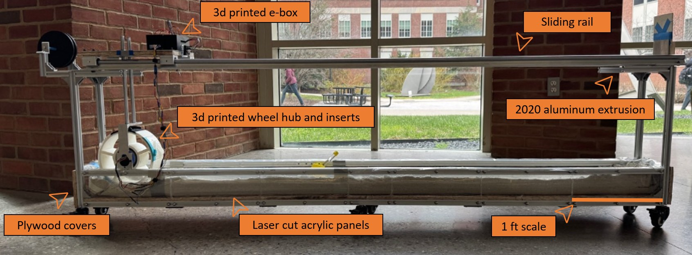
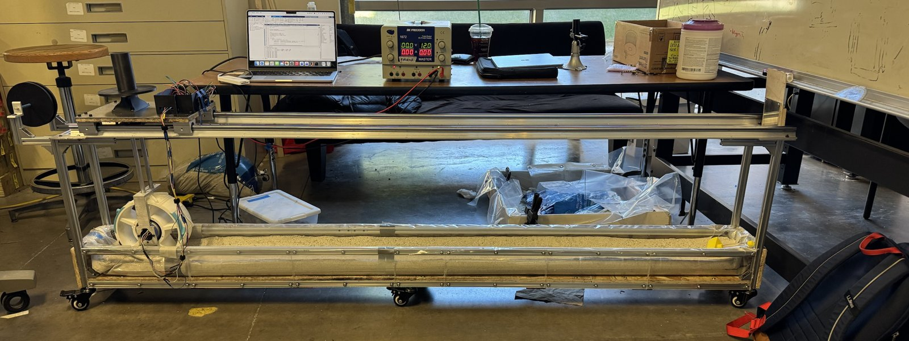
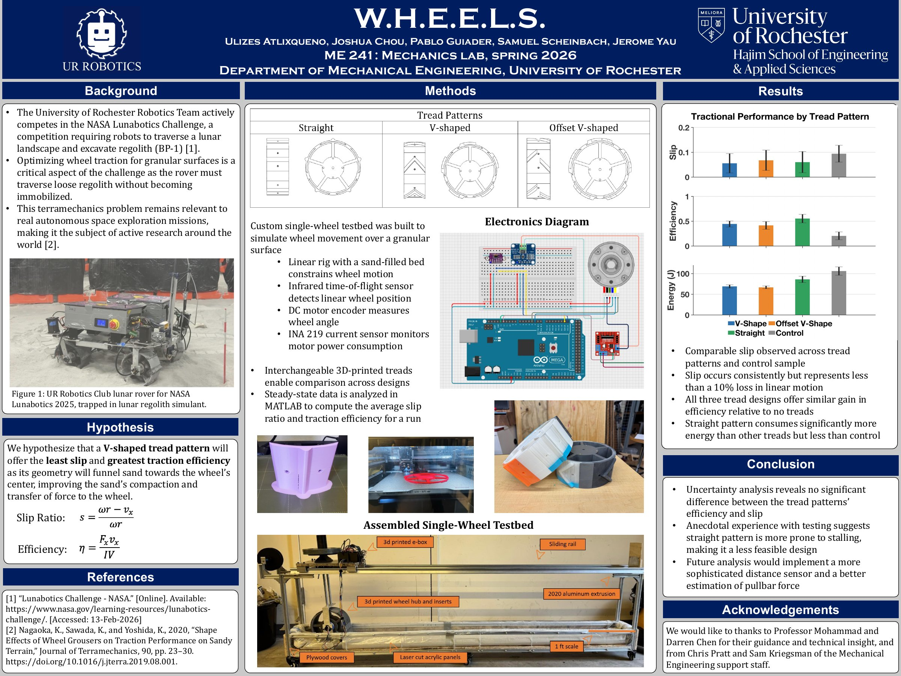
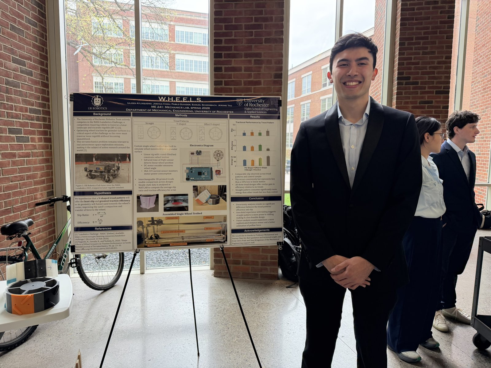
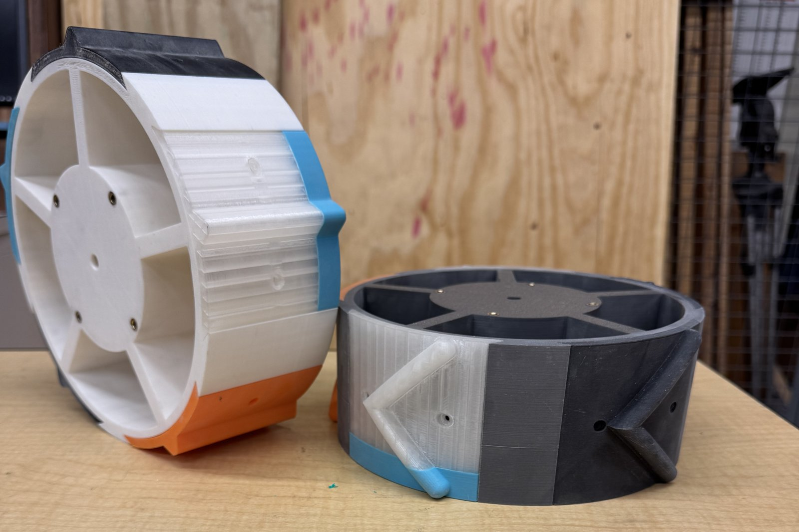

W.H.E.E.L.S.: Tread Traction on Lunar Regolith
How does tread geometry affect a wheel's traction on loose, sandy terrain? Our five person team built a 2 meter single wheel testbed to compare 3D printed tread patterns for the UR Robotics Club's Lunabotics rover.
- My role
- Electronics housing design, 3D printing lead, data acquisition
- Team
- Ulizes Atlixqueno, Joshua Chou, Pablo Guiader, Sam Scheinbach, Jerome Yau
- Tools
- Arduino Mega, MATLAB, 3D printing in PLA

Motivation
The UR Robotics Club's rover for NASA Lunabotics 2025 got stuck in lunar regolith simulant, and competing teams use a wide range of wheel designs with little agreement on what works best. We set out to test whether tread geometry measurably changes traction on granular terrain. Our hypothesis was that a V shaped tread would slip the least and be the most efficient, since its shape should funnel sand toward the center of the wheel and compact it.
Testbed
The rig is a 2 m by 20 cm aluminum extrusion frame over a sealed plywood and acrylic bed holding 30 L of sand. A sliding carriage on two linear rails carries the drive module and applies a constant 10 lb vertical load, while letting the wheel rise and fall freely with the terrain. Each wheel is a reusable 3D printed base with five interchangeable tread inserts, so patterns can be swapped between trials without reprinting the whole wheel. We tested straight, V shaped, and offset V shaped treads against a smooth control wheel.


Electronics and data acquisition
An Arduino Mega reads a VL53L0X time of flight sensor for the carriage position, the motor's quadrature encoder for wheel angle, and an INA219 sensor for motor current, and drives the motor through an L298N driver. MATLAB communicates with the Arduino directly and logs every run, then computes the slip ratio and traction efficiency over the steady state portion of each run. Each tread pattern was tested in nine runs across three printed wheel sets, so variation from printing shows up in the uncertainty instead of hiding as a bias.

My contributions
I designed the housing for the electronics, led the 3D printing of the wheels and tread sets, took part in data acquisition, and wrote the abstract of the final report.
Results
The V shaped tread had the lowest mean slip, as we predicted, but the differences between the three patterns were within the 95% confidence intervals, so none of them was clearly better on slip or efficiency. Slip stayed low for every pattern, at roughly 10% or less. The clearest result was in energy use: the straight tread consumed significantly more energy than either V pattern, which matched our observation that it stalled more often. Every tread pattern was also significantly more efficient than the smooth wheel, which suggests that having treads at all matters more than their exact shape.

The main source of uncertainty was how we estimated the friction force, so future versions would add a force and torque sensor on the drive module to measure pullbar force continuously, and would track stall frequency and sinkage as additional metrics.
Poster
We presented the project as a research poster for ME 241 in Spring 2026. Click the poster to open the full resolution PDF.


Gallery
